Texto 02 – Cartografia: representações do espaço geográfico, localização e coordenadas geográficas.
Conteúdo: Introdução à História da Cartografia; Mapas; Sistemas referenciais para
localização espacial: pontos cardeais; Rotação; coordenadas geográficas, longitude, latitude.
Objetivo: Entender a importância da Cartografia para a construção do conhecimento do
ser humano. Aplicar o sistema de coordenadas geográficas à localização de pontos na superfície terrestre.
Digite seu nome
Introdução
Na aula passada, vimos que o espaço geográfico e seus
conceitos auxiliares, constituem o objeto de estudo da Geografia, uma ciência envolvida com os aspectos
sociais e espaciais da sociedade.
Nesta aula, veremos como a Geografia, em colaboração com a Cartografia, dispõem de técnicas
para representar o espaço geográfico.
Ao final, você saberá qual a importância da Cartografia para o conhecimento do ser humano e,
também, aprenderá a localizar-se no espaço pelos pontos cardeais e pelas coordenadas geográficas.
Duvid - Entrevista
Essa semana o convidado é a Cartografia.
Duvid:. Bem-vinda Cartografia. Sabemos que a
senhora está bem ocupada cuidando da localização da Terra. Então, estamos felizes que tenha tido tempo para
falar conosco.
Cartografia: Sem problemas. E, eu estou bastante ocupada, ainda mais nos dias de
hoje com satélites e GPS, antigamente era mais fácil se preocupar com o mapeamento do mundo.
Duvid: Podemos imaginar. Antes o ser humano nem sabia escrever e já fazia pinturas nas
cavernas ou marcava locais de caça para conseguir voltar com segurança.
Cartografia: Foi minha primeira experiência, eu me lembro. Ah, como eu era
primitiva, os homens faziam as pinturas no teto das cavernas de animais ou situações do cotidiano. Eu ainda
era bem nova, isso há uns 40 mil anos atrás na época do neolítico. Como o tempo passa, não é verdade?
Duvid: Sim, passa rápido. Aproveitando esse tema, nós pesquisamos sua rede social e
descobrimos essa sua obra aqui que a
senhora postou
há cerca de 2500 a 3000 anos A.C:
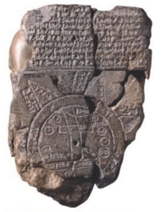
Fonte: https://commons.wikimedia.org.
Cartografia: Vocês pesquisam mesmo sobre nossa origem! Esse trabalho é uma
verdadeira relíquia. Eu até esqueci a data correta lá na Mesopotâmia. Hoje já mudou o nome, para o atual
Iraque e Kuwait, mas antigamente era na cidade da Babilônia que fazíamos esse tipo de mapa. Era comum
escrever na argila, queríamos registrar o encontro do rio Tigre com o Eufrates, tempo bom aquele.
Duvid: E, do mesmo modo, os gregos tiveram um papel muito importante para conhecer o
espaço geográfico, não foi?
Cartografia: Sem dúvida. Eu ajudei Eratóstenes, uns 200 anos antes de Cristo, a
fazer um mapa da área até então conhecida pelos homens, eles não sabiam o que ainda estava por vir.
Duvid: Nós também recuperamos essa obra-prima. Olha, uma reconstituição (de autor
não identificado) do mapa de Eratóstenes,
de cerca
de 220 A.C. O matemático, geógrafo, poeta grego e bibliotecário de Alexandria usou os levantamentos do mundo
conhecidos, após as conquistas de Alexandre, o Grande.
Cartografia: Maravilhoso. Esse mapa mostra a Europa, parte da Ásia e parte do Norte
da África. E ele ainda fez o cálculo da circunferência da Terra, quase de maneira exata com os dados de
hoje.
Duvid: Esses gregos eram realmente incríveis. A china e o mundo árabe produziram
muitos mapas. Mas na Idade Média, um chamou à atenção, o mapa em
T. Por que ele foi tão importante? O que significa esse formato?
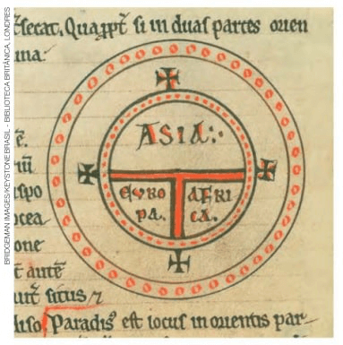
Fonte: https://pt.wikipedia.org/wiki/Mapa_T_e_O.
Cartografia: Bom, diferente dos outros mapas, esse representou a influência da
religião cristã. Eu vivi muito ligada à igreja. Perceba que a forma em círculo representa a esfericidade da
Terra e a letra T a divisão entre a Europa, Ásia e África. Mas não posso negar a representação da cruz
cristã e da Santíssima Trindade nesse mapa. Era comum colocar Jerusalém no centro dos mapas.
Duvid: Uau! Que história. E ainda nem haviam mapeado as Américas. E para encerrar,
uma última pergunta: Como a senhora se definiria?
Cartografia: Essa pergunta é realmente difícil. Eu diria que não sou de uma única
maneira ou não me defino por apenas um ângulo. Eu sou uma ciência, mas também uma técnica. E porque não
dizer uma arte! Eu ajudo os homens a conhecerem e representarem o mundo e sou quase como uma irmã para a
Geografia em particular. Eu mudei muito com o passar do tempo. Lembra que comecei nas cavernas, passei pela
argila, pelo couro, pelos papiros, as grandes navegações e hoje estou inteiramente conectada com os
satélites pela internet. Eu localizo fenômenos naturais e sociais e estou em constante mutação. É isso que
penso que sou.
Duvid: Nós vimos hoje um outro lado seu, senhora Cartografia. Acho que teremos que
fazer outra entrevista no futuro.
Cartografia: Eu agradeço pelo interesse e, da mesma forma, de poder compartilhar o
que sei. Obrigado e até mais.
Agora é com você!
Após ter lido a Entrevista com a Cartografia, escreva em seu caderno três
perguntas que gostaria de fazer para aprender mais sobre esse tema. Seja criativo! Vale um
globinho.
Você precisará deles para completar sua aula e seguir adiante.
Por que aprender a se localizar?
É comum representar o espaço geográfico para melhor conhecê-lo. Mas como fazer isso? É ai
que entre a Cartografia. Assim como aprender a ler e escrever é vital para nossa formação humana, “ler” o
espaço em que vivemos é fundamental para melhor organizarmos nosso bairro, cidade ou país.:
Veja o que diz um famoso geógrafo francês, Yves Lacoste:
“Vai-se à escola para aprender a ler, a escrever
e a
contar. Por que não para
aprender a ler uma carta? Por que não para compreender a diferença entre uma carta de grande escala e uma
outra em pequena escala e se perceber que não há nisso apenas uma diferença de relação matemática com a
realidade, mas que elas não mostram as mesmas coisas? Por que não aprender a esboçar o plano da aldeia ou do
bairro? Por que não representam sobre o plano de sua cidade os diferentes bairros que conhecem, aquele onde
vivem, aquele onde os pais das crianças vão trabalhar etc.? Por que não aprender a se orientar, a passear na
floresta, na montanha, a escolher determinado itinerário para evitar uma rodovia que está congestionada?”
(LACOSTE, 2003, p.55).
As cartas, como veremos a seguir, representam áreas menores que o mapa. Esse registro do
espaço geográfico começou quando os homens estabeleceram referências simples para sua localização, como
montanhas, rios, árvores ou outros elementos da paisagem para retornarem de maneira segura para casa.:
Outra referência principal foi por meio dos astros, no caso o Sol, a lua e as estrelas.
Foi ai que foi desenvolvido pelos homens um sistema de referências chamado de pontos cardeais .
Veja a representação
aqui:
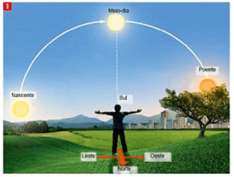
Fonte: Carpanelli (2015, p.7). Adaptado.
Para se localizar por meio do Sol, temos que observar em que lado ele “nasce” ou surge
pela manhã. Esse fenômeno ocorre devido o movimento de rotação da Terra.
Rotação - O movimento de rotação terrestre é aquele que
o
planeta executa em torno de seu próprio eixo, em um período de, aproximadamente, 24 horas. Graças a ele, a
Terra é achatada nos polos e expandida no Equador, não formando uma esfera perfeita. Mas é, também, por
causa desse movimento que temos a variação dos períodos de claro e escuro, isto é, dias e noites na Terra,
dentre outros fenômenos. Veja a
imagem:
Na realidade, o sol não nasce todo dia, mas sim a Terra que gira em torno de si mesma e
possibilita esse movimento aparente do Sol.
É esse movimento que utilizamos para nos orientarmos no espaço.
Desse modo, ao apontar o braço direito para onde o Sol nasce estabeleceu-se uma convenção que seria o ponto cardeal
Leste. Isso porque na tradição religiosa, Jerusalém estava no Leste da Europa ou Oriente. Já o lado oposto
ou o braço esquerdo é o Oeste ou Ocidente.
À nossa frente está o Norte, e nas nossas costas o Sul. A mesma coisa acontece com a Lua.
Ela nasce no Leste e se põe no Oeste.
A nossa frente está o Norte, e nas nossas costas o Sul. A mesma coisa acontece com a Lua.
Ela nasce no Leste e se põe no Oeste.
É possível, também, orientar-se pelas estrelas. Nesse caso através das constelações da
Ursa Menor, (visível somente no
hemisfério Norte) e a Cruzeiro do
Sul (visível no hemisfério Sul).
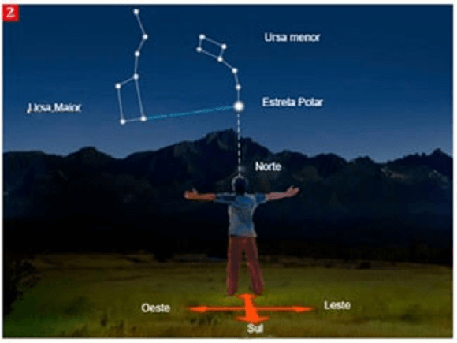
Constelação da Ursa menor. Fonte: Carpanelli (2015,
p.7). Adaptado.
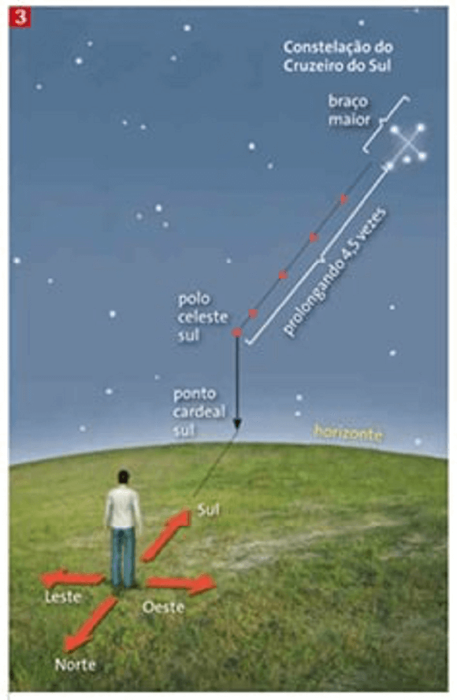
Constelação Cruzeiro do Sul. Fonte: Moreira e Sene
(2016, p.32).
É por isso que temos a Rosa-dos-Ventos.
Inicialmente utilizada para a navegação, daí o seu nome e formato ligado ao vento. Ela concentra a ideia do
plano cartesiano de Norte e Sul no eixo Y e de Leste e Oeste no
eixo X. Além de seus pontos colaterais: nordeste, noroeste, sudoeste e sudeste, além de outros.
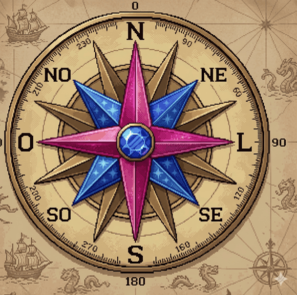
Fonte: Organizado pelo autor.
Entretanto, essa navegação somente por orientação pelos astros, as vezes não é muito
precisa ou exata. Diante disso, os aparelhos foram aperfeiçoados
, tais como a bússola, inventada pelos chineses e com uma agulha imantada que aponta para
o norte magnético da Terra; o Astrolábio, que determinava geometricamente a posição das estrelas, mas era de
difícil manuseio e foi substituído pelo Sextante. Este utiliza o sistema de latitudes que veremos
adiante.
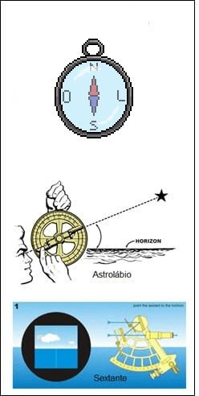
Fonte: Organizado pelo autor, Wikipedia.
Teste seu conhecimento
Denominação do local onde vemos o nascimento aparente do sol?
Teste seu conhecimento
Denominação do local onde vemos o poente do sol?
Teste seu conhecimento
Denominação do local que fica a sua frente ao estender o braço esquerdo na direção do
surgimento do sol?
Teste seu conhecimento
Denominação do local que fica em suas costas ao estender o braço direito na direção poente
do sol?
Teste suas habilidades!
Encontre as direções dos objetos no mapa do tesouro abaixo e as escreva
corretamente:
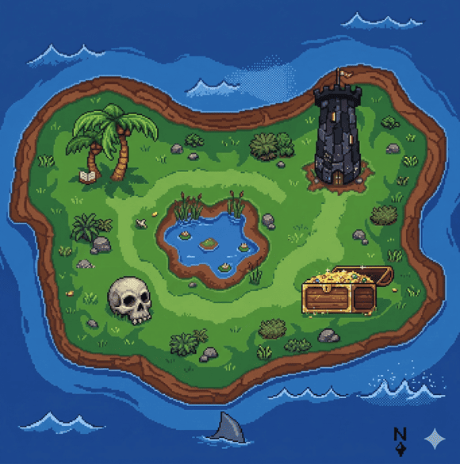
Teste seu conhecimento!!
É preciso lembrar que ninguém escolhe o ventre, a localização
geográfica, a
condição socioeconômica e a condição cultural para nascer. Nasce onde o acaso determinar. Por isso,
temos
que cuidar de todos aqueles que estão em todos os recantos deste planeta." (Aziz Ab'Saber, geógrafo.)
Pode-se inferir
do texto acima:
As Coordenadas Geográficas
Vimos que a localização através dos astros como o Sol, a lua ou as estrelas nem sempre
possuem a precisão necessária ou exata.
Para resolver esse problema, desde o tempo dos gregos, um sistema de linhas imaginárias
foram criados para obter uma localização exata de qualquer ponto na Terra, as chamadas coordenadas
geográficas.
Coordenadas geográficas - Consiste em um sistema de
mapeamento global utilizado pela Cartografia e baseado em linhas imaginárias sobre a superfície
terrestre e
alinhadas ao eixo de rotação do planeta. É formado por linhas horizontais (paralelos) e
verticais
(meridianos).
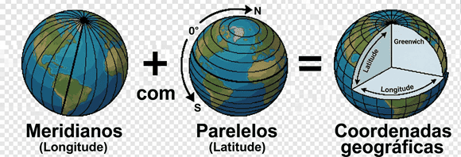
Fonte: (Freitas, 2005).
Paralelos - São linhas que dividem o globo
horizontalmente, sendo o Equador o paralelo zero grau. (0º). Este divide o globo em dois hemisférios:
Norte (Boreal ou setentrional) e Sul (Austral ou Meridional).
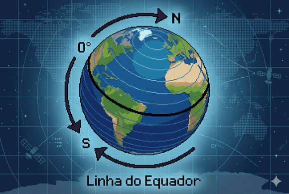
Fonte: (Freitas, 2005).
Meridianos - São linhas imaginárias que
dividem o globo verticalmente em: hemisfério oriental (Leste) e ocidental
(Oeste). O Meridiano
zero grau foi convencionado como o da cidade de Greenwich, nos arredores Londres, Inglaterra.
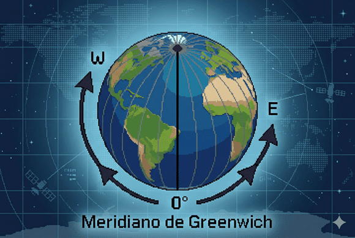
Fonte: (Freitas, 2005).
Latitude - É o ângulo formado pelo paralelo principal,
Equador e o paralelo do lugar que se quer localizar, variando de 0º a 90º Sul ou Norte
Longitude - É o ângulo formado entre o meridiano
inicial,
Greenwich, e o meridiano do lugar que queremos localizar. A longitude varia de 0º a 180 para Leste e
para
Oeste.
Juntos, Latitude e Longitude formam o sistema de referência para localização espacial
terrestre.
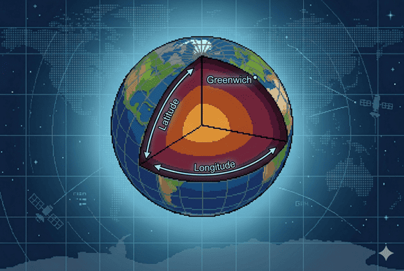
Para facilitar a localização, as coordenadas são, frequentemente, dispostas em um
planisfério (assunto ligado as Projeções Cartográficas que veremos nas próximas aulas).
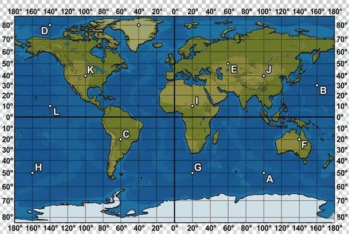
Fonte: https://suportegeografico77.blogspot.com/
Para localizarmos qualquer ponto na superfície da Terra, basta iniciarmos pela Latitude
(Norte ou Sul) e depois a Longitude (Oeste ou Leste).
Exemplo: Localização do ponto A acima:
Ponto A: Lat. 50ºS, Long. 100ºL ou 50ºS 100ºL. É comum aparecer a
nomenclatura em inglês
das localizações: North, South, East e West.
Ponto B: Lat. 30ºN, Long. 160ºL ou 30ºN 160ºL
Agora é com você!
Localize no planisfério acima os pontos C, D, E e escreva em seu
caderno corretamente:
Ponto C: Lat.: ___º__; Long.:___º___.
Ponto D: Lat.: ___º __; Long.:___º___.
Ponto E: Lat.: ___º __; Long.:___º___.
Não existe pergunta boba! A Ciência é feita de perguntas!
P:Sempre que penso em Geografia já
me
lembro de mapas, isso é correto?
R: Sim, isso é normal devido à associação com a
linguagem cartográfica. Aliás, podemos dizer que a linguagem da Geografia é a Cartografia. Embora os
mapas
sejam usados em diversas áreas do conhecimento, é na Geografia que ele é mais evidente pelo fato de que
o
estudo do espaço geográfico se torna melhor representado pelos mapas.
P:Qual a diferença entre mapas,
cartas e
plantas?
R: Trata-se, mais uma vez, de formas de representar o
espaço geográfico e do nível de detalhes que queremos revelar. Por exemplo, quero que um arquiteto faça
um
modelo de uma casa, ele usará uma planta com uma escala próxima da realidade (assunto que veremos nas
próximas aulas). Já o mapeamento de bairro inteiro exige outra escala. Quero representar o território
brasileiro, então usamos o mapa, pois o nível de detalhes não será muito grande.
P:Qual a circunferência da Terra e
quanto vale 1º em km, já que a Terra é uma esfera de 360º?
R: Para saber quanto vale 1º grau devemos dividir a
circunferência da Terra no Equador, que é de 40.075 km por 360º. O resultado é de aproximadamente 111
km.
Isso no Equador, pois a longitude varia de acordo com a proximidade dos polos. Como o dia tem 24 horas e
uma
circunferência tem 360º, se dividirmos 360 por 24m obteremos 15º, que é o caminho percorrido pela Terra
em
apenas 01 hora. Calcular a longitude é fazer esse cálculo de tempo entre uma posição e outra.
Combine as imagens com textos sobre o tema da Cartografia. Valor: 3 globinhos.
Mapa
Cruzeiro do Sul
Rotação
Longitude
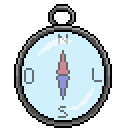
Latitude
Bússola
×
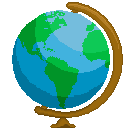
0%
Referências bibliográficas
CARPANELLI,Francesca. La geografia in 30 lezioni. Geografia generale ed economica.
Itália:
Zanichelli, 2015.
FREITAS, Maria Isabel Castreghini de (Org.). Cartografia e Meio Ambiente. Rio Claro:
IGCE/UNESP; Bauru: FC/Unesp; CECEMCA. 2005.
SENE, Eustáquio de; MOREIRA, João Carlos. Geografia geral e do Brasil: espaço geográfico
e
globalização: ensino médio 3. ed. São Paulo: Scipione, 2016.
Yves Lacoste. A geografia – isso serve, em primeiro lugar, para fazer a guerra. 2. ed.
Campinas: Papirus, 2003 [1989]./p>
 Duvid - Entrevista
Duvid - Entrevista